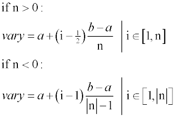
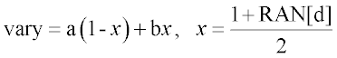
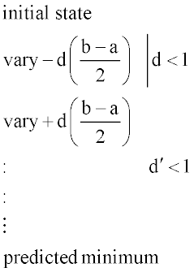

Evaluates a given $FCN function.
Syntax
$EVAL vary a b n [ vary' a' b' n' ...] [ func [ func' ...] ] [ 'title' ]
[ m ] d d'
Remarks
- The first format evaluates the given
$FCN functions while changing the internal register vary from
a to b in n steps (up
to 30000). Actually,

- Up to 60 variables are permitted. The
resulting values in the function func (or the sum of the squares,
if more than one given) at the first three levels are continually written to a BRO
binary distribution file called EVAL.DIS or macro.dis (with optional title) for
later processing. One additional evaluation is done with the registers reset to
their values at which the discrete value of func was minimum.
- The second format iterates the next input
record either m times while changing the varys
randomly, or to approach the actual minimum of the sum of the squared funcs (up to 250). If m is specified the d are the probability distribution types; that is,

Otherwise, if m is not specified, d are
fractional derivative increments, relative to the ranges a b
that are used to build a change matrix, which is solved by a Singular Valued
Decomposition (SVD) technique. Double-sided derivatives are computed to
approximate a damping factor from the non-linearity predicted by the homogeneous
second derivatives. Therefore, the required number of evaluations is
2*(variables+1); that is,

- The number of funcs
should be greater than (>) or equal to (=) the number of varys
for it to find a unique solution. For nonlinear problems, successive $EVAL commands may be needed to reach the precise minimum.
$EVAL Examples